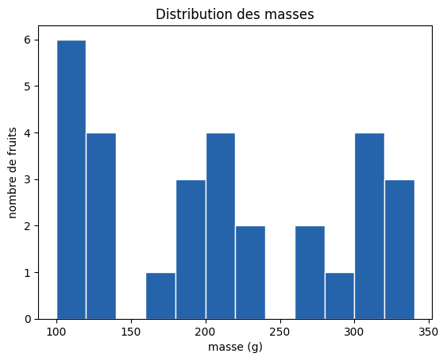
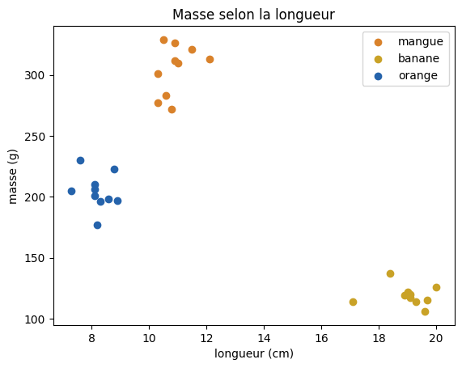

Programmation Python — Séance 8 : Visualiser et faire le pont
Rappel des trois graphiques : | La question | Le graphique | La fonction | |—|—|—| | Comment se répartit une mesure ? | histogramme | plt.hist | | Quel groupe a la plus grande valeur ? | barres | plt.bar | | Deux mesures sont-elles liées ? | nuage de points | plt.scatter |
Dernière séance. Un tableau de chiffres ne montre pas la forme des données ; un graphique, si. On travaille sur un jeu très concret — des fruits du marché (mangues, bananes, oranges), pesés et mesurés — puis on fait le pont vers le Machine Learning.
Comment travailler. Exécutez chaque cellule avec Maj + Entrée. Les cellules À vous sont à compléter : c’est là que vous apprenez. Elles vont de la simple répétition à l’analyse complète, et la dernière section est un exercice de synthèse où vous menez l’analyse de bout en bout.
Rappel des trois graphiques : | La question | Le graphique | La fonction | |—|—|—| | Comment se répartit une mesure ? | histogramme | plt.hist | | Quel groupe a la plus grande valeur ? | barres | plt.bar | | Deux mesures sont-elles liées ? | nuage de points | plt.scatter |
1. Le jeu de données
30 fruits : 10 mangues, 10 bananes, 10 oranges. Pour chacun, la masse (g), la longueur (cm) et le taux de sucre (%).
À vous (A). Affichez la longueur minimale et la longueur maximale de la table.
# À vous : affichez df["longueur"].min() et df["longueur"].max()
À vous (B). Affichez le résumé statistique des mesures avec df.describe().round(2).
# À vous : affichez df.describe().round(2)
2. L’histogramme : comment se répartit une mesure
Un histogramme découpe l’axe en tranches et compte combien de fruits tombent dans chacune. On légende toujours : xlabel, ylabel, title.
plt.hist(df["masse"], bins=range(100, 360, 20), color="#2563AB", edgecolor="white")plt.xlabel("masse (g)")plt.ylabel("nombre de fruits")plt.title("Distribution des masses")

Trois amas apparaissent : autour de 120 g, de 200 g et de 300 g. Ce sont les bananes, les oranges et les mangues — le tableau de chiffres ne le montrait pas aussi vite.
L’argument bins fixe les tranches : ici, une barre tous les 20 g. Des tranches plus fines montrent plus de detail, au risque du bruit.
À vous (1). Tracez l’histogramme de la colonne sucre, avec un titre et des axes légendés.
# À vous : plt.hist(df["sucre"], ...) avec xlabel, ylabel, title
À vous (2). Tracez l’histogramme de la colonne longueur. Combien d’amas voyez-vous ? Écrivez votre réponse en commentaire dans la cellule.
# À vous : histogramme de longueur, puis en commentaire : combien d'amas ?
À vous (3). Reprenez l’histogramme des masses avec des tranches plus larges : bins=range(100, 360, 60). Les trois amas sont-ils encore visibles ?
# À vous : plt.hist(df["masse"], bins=range(100, 360, 60)) puis legendes
3. Le diagramme en barres : comparer les groupes
Pour comparer une valeur par fruit, on part d’un groupby (Séance 7), puis on trace des barres.
La banane se detache nettement : c’est le fruit le plus long du panier.
À vous (4). Tracez un diagramme en barres du taux de sucre moyen par fruit (calculez d’abord df.groupby("fruit")["sucre"].mean()).
# À vous : barres de df.groupby("fruit")["sucre"].mean()
À vous (5). Tracez un diagramme en barres de la masse maximale par fruit (.max() au lieu de .mean()). Comparez avec le graphique des moyennes : les fruits gardent-ils le même ordre ?
# À vous : barres de df.groupby("fruit")["masse"].max()
4. Le nuage de points : deux mesures à la fois
Le nuage de points (scatter) place chaque fruit selon deux mesures. En colorant par fruit, les groupes apparaissent. On trace une couche par fruit, avec sa couleur et son label.
couleurs = {"mangue": "#D9822B", "banane": "#C9A227", "orange": "#2563AB"}for nom, coul in couleurs.items(): sous = df[df["fruit"] == nom] plt.scatter(sous["longueur"], sous["masse"], c=coul, label=nom)plt.xlabel("longueur (cm)")plt.ylabel("masse (g)")plt.title("Masse selon la longueur")plt.legend()

Trois amas nettement séparés. La banane est longue et légère ; la mangue, courte et lourde ; l’orange, courte et moyenne. Avec ces deux mesures, on reconnaît le fruit sans le voir — c’est exactement l’idée du Machine Learning.
À vous (6). Tracez un nuage de points de sucre (axe des x) contre masse (axe des y), coloré par fruit, avec une légende.
# À vous : scatter de sucre (x) contre masse (y), colore par fruit, avec legende
À vous (7). Tracez le nuage longueur contre sucre, coloré par fruit. Les trois groupes sont-ils aussi bien séparés qu’avec longueur et masse ? Répondez en commentaire.
# À vous : scatter de longueur (x) contre sucre (y), colore par fruit
À vous (8). Sans couleur cette fois : tracez longueur contre masse en un seul plt.scatter, sans boucle. Voit-on encore quel groupe est quel fruit ?
# À vous : plt.scatter(df["longueur"], df["masse"]) puis legendes des axes
5. Une mini-analyse exploratoire
L’analyse exploratoire (EDA) enchaîne toujours les mêmes gestes : charger, décrire, tracer, observer. Le profil moyen de chaque fruit résume la table.
On observe : la mangue est la plus lourde et la plus sucrée ; la banane est la plus longue ; l’orange est la moins sucrée. Chaque mesure aide à distinguer les fruits.
À vous (9). Affichez la masse maximale par fruit avec df.groupby("fruit")["masse"].max().
# À vous : affichez df.groupby("fruit")["masse"].max()
À vous (10). Un client veut le fruit le plus sucré. Affichez le taux de sucre moyen par fruit, trié du plus sucré au moins sucré (.sort_values(ascending=False)).
# À vous : df.groupby("fruit")["sucre"].mean().sort_values(ascending=False)
À vous (11). Combien de fruits pèsent plus de 250 g ? Utilisez un filtre (Séance 7) puis len(...).
# À vous : len(df[df["masse"] > 250])
6. Le pont vers le Machine Learning
Reconnaître le fruit à partir de ses mesures, c’est le travail d’un modèle. On lui présente deux objets : une matrice X (les mesures, un fruit par ligne) et un vecteur y (ce qu’on veut prédire, ici le nom du fruit).
X = df[["masse", "longueur", "sucre"]].valuesy = df["fruit"].valuesprint("X shape :", X.shape)print("y shape :", y.shape)print("premier fruit X[0] :", X[0])print("son nom y[0] :", y[0])
X shape : (30, 3)
y shape : (30,)
premier fruit X[0] : [301. 10.3 14.7]
son nom y[0] : mangue
X a la forme (30, 3) : 30 fruits, 3 mesures. y a la forme (30,) : un nom par fruit. C’est exactement ce qu’attend une bibliothèque de Machine Learning comme scikit-learn. Le code ci-dessous n’est pas exécuté ici (il appartient au cours de ML) ; il montre la suite :
from sklearn.tree import DecisionTreeClassifiermodele = DecisionTreeClassifier()modele.fit(X, y) # le modele APPREND le lien X -> ymodele.predict([[300, 11, 14]]) # un fruit de 300 g, 11 cm, 14 % : mangue ?
Deux méthodes suffisent : fit pour apprendre, predict pour prédire.
Les trois premieres lignes de X : un fruit par ligne, trois mesures par colonne.
À vous (12). Construisez une matrice X2 ne contenant que masse et longueur, puis affichez sa forme avec X2.shape.
# À vous : X2 = df[["masse", "longueur"]].values, puis affichez X2.shape
À vous (13). Construisez le vecteur y2 = df["fruit"].values et affichez ses 5 premières valeurs avec y2[:5].
# À vous : y2 = df["fruit"].values, puis affichez y2[:5]
À vous (14). Vérifiez que X et y ont bien le même nombre de lignes : affichez X.shape[0] == y.shape[0]. Pourquoi est-ce indispensable ?
# À vous : affichez X.shape[0] == y.shape[0]
7. Exercice de synthèse : une analyse de bout en bout
Un maraîcher vous confie un nouveau relevé : 18 fruits, avec les mêmes mesures. À vous de mener l’analyse seul, en suivant les quatre gestes de l’EDA : charger → décrire → tracer → observer.
Synthèse 1 — Charger. Affichez les 5 premières lignes de panier, puis le nombre de fruits de chaque type.
# À vous : panier.head() puis panier["fruit"].value_counts()
Synthèse 2 — Décrire. Affichez le résumé statistique des mesures, arrondi à 2 décimales.
# À vous : panier.describe().round(2)
Synthèse 3 — Décrire. Affichez le profil moyen de chaque fruit (les trois mesures d’un coup, arrondies à 1 décimale).
# À vous : panier.groupby("fruit")[["masse", "longueur", "sucre"]].mean().round(1)
Synthèse 4 — Tracer. Tracez l’histogramme des masses de panier. Retrouve-t-on les trois amas ?
# À vous : histogramme des masses de panier, avec les trois legendes
Synthèse 5 — Tracer. Tracez le diagramme en barres de la longueur moyenne par fruit.
# À vous : barres de panier.groupby("fruit")["longueur"].mean()
Synthèse 6 — Tracer. Tracez le nuage longueur contre masse, coloré par fruit, avec une légende.
# À vous : scatter longueur (x) contre masse (y), colore par fruit
Synthèse 7 — Observer. En trois phrases, dans la cellule markdown ci-dessous, décrivez ce que vous avez compris de ce panier : la forme des masses, le fruit le plus long, et si les groupes sont séparables.
(Écrivez votre réponse ici — double-cliquez sur cette cellule pour l’éditer.)
Synthèse 8 — Le pont ML. Construisez X_panier (les trois mesures) et y_panier (le fruit), puis affichez leurs formes.
# À vous : X_panier = ..., y_panier = ..., puis affichez les deux shapes
8. Pièges fréquents
Un graphique sans légende est illisible : toujours xlabel, ylabel, title (et legend() s’il y a des groupes).
Colorer par catégorie demande une boucle : une couche scatter par fruit, chacune avec sa couleur et son label.
.values transforme des colonnes en tableau NumPy : le format attendu pour X et y.
La forme compte : X est (n_fruits, n_mesures), y est (n_fruits,).
Récapitulatif — et bilan du cours
Visualiser : plt.hist (répartition), plt.bar (comparer des groupes), plt.scatter (deux mesures, coloré par catégorie) ; toujours légender.
Mini-EDA : charger → décrire → tracer → observer.
Pont ML : la table devient X (les mesures) et y (à prédire) ; un modèle s’utilise avec fit puis predict.
Bilan du cours. Des valeurs et des types (S1) aux structures (S2), au contrôle du flux (S3), aux fonctions (S4), aux objets (S5), puis à NumPy (S6), pandas (S7) et à la visualisation (S8) : vous savez désormais charger, explorer et préparer des données — et vous êtes prêts pour le Machine Learning.